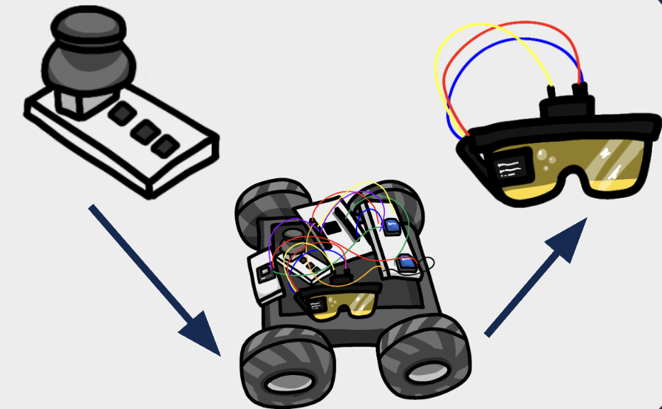

Overview & Core Functionality
HEATSeeker is a search-and-rescue embedded system consisting of a differential-drive robot and a pair of smart HUD glasses. The robot uses an IR thermal camera to detect heat sources such as people or hotspots, streams thermal data wirelessly, and enables operators to navigate safely in low-visibility environments.
Captures 8×8 heatmaps of people and hotspots in real time.
Displays thermal imagery, battery level, and control mode directly in view.
XBee communication enables low-latency command and data exchange.
Problem Statement: Safer Navigation
In disaster environments, smoke, darkness, debris, and structural instability make it unsafe for humans to enter directly. Existing robotic solutions often require operators to split attention across multiple screens or rely solely on manual control.
System Architecture
The handheld controller sends joystick commands and control modes to the robot. The robot streams thermal frames and system status to the HUD glasses, creating a closed-loop human-in-the-loop system.

Tracking & Control
HEATSeeker implements proportional feedback control to track the hottest pixel in the thermal image. A dead zone prevents oscillations, while X/Y error correction steers and drives the robot toward the target.
- Dead-zone based error suppression
- Yaw correction using horizontal error
- Forward motion based on vertical error
Subsystems
User Controller
- Joystick X/Y input
- Rotary knob for base heat level
- Mode selection buttons
- STM32 + XBee
Rescue Robot
- Differential-drive platform
- AMG8833 thermal camera
- Motor driver with PWM control
- Battery voltage monitoring
HUD Glasses
- 8×8 thermal heatmap display
- Battery and mode indicators
- Physical buttons for interaction
- STM32 + LCD + XBee